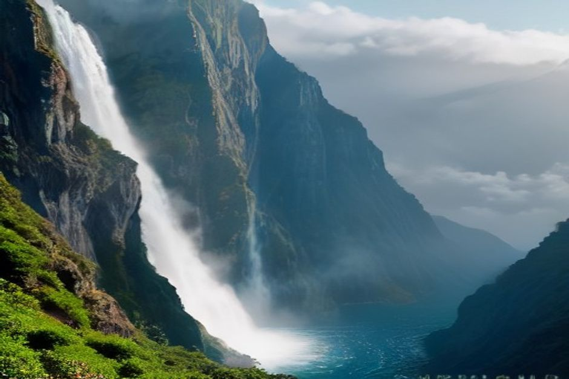
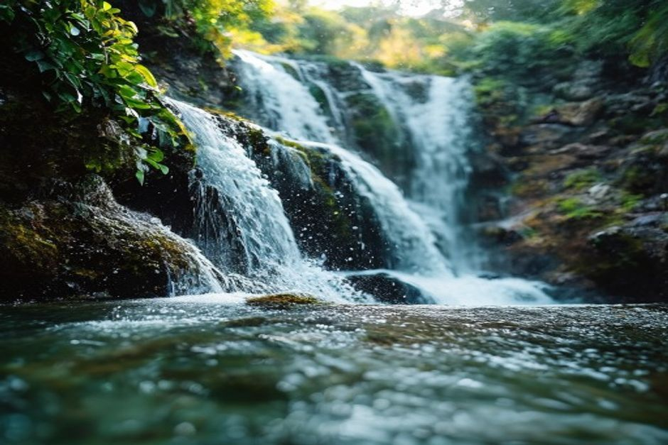

Wer „Wasserfall Madeira“ in die Suchmaske tippt, will meist zwei Dinge wissen: Welcher ist wirklich sehenswert, und muss ich dafür stundenlang wandern? Die gute Nachricht: Es gibt Madeira-Wasserfälle direkt an der Straße, aber auch Ziele, für die Sie einen halben Tag einplanen sollten. Hier sind die zehn besten, sortiert nach Aufwand, mit Gehzeiten, Anfahrt und den Regeln, die Sie vor der Reise kennen sollten.
Wasserfall auf Madeira ohne Wandern: die Stopps an der Straße
Zwei der bekanntesten Wasserfälle der Insel erreichen Sie praktisch vom Auto aus. Beide kosten nichts und brauchen keine Reservierung.
1. Véu da Noiva bei Seixal
Der „Brautschleier“ fällt rund 30 Meter über Vulkanfelsen direkt in den Atlantik, an der Nordküste bei Seixal. Es gibt einen Aussichtspunkt unmittelbar neben dem Parkplatz, Sie müssen also keinen Schritt wandern. Er passt gut als Zwischenstopp auf einer Rundfahrt an der Nordküste.
2. Cascata dos Anjos bei Ponta do Sol
Dieser Wasserfall stürzt mitten auf die alte Küstenstraße zwischen Ponta do Sol und Madalena do Mar. Das ist die Madeira-Wasserfall-Straße, nach der viele suchen: Sie halten an und gehen buchstäblich hindurch. Eher eine Dusche am Straßenrand als ein Naturerlebnis zum Verweilen, aber ein Foto wert. Packen Sie eine Wechselgarnitur oder zumindest ein Handtuch ein.

Kurze Wege: Wasserfälle mit leichter Wanderung
Wenn Sie bereit sind, ein bis zwei Stunden zu Fuß zu gehen, öffnet sich die Auswahl deutlich.
3. Risco-Wasserfall, Rabaçal
Der Risco ist der bekannteste Wasserfall Madeiras: ein einzelnes Band von rund 100 Metern über eine moosbewachsene Felswand. Der Weg über die Levada do Risco ist eben und leicht, jeweils 30 bis 40 Minuten ab dem Parkplatz in Rabaçal. Eine der höchsten Kaskaden der Insel mit einem der kürzesten Zugänge.
4. Água d'Alto (Cascata do Faial), Faial
Etwa 30 Meter hoch, mit klarem Becken im Wald, an der Ribeira do Faial nahe Faial an der Nordküste, in der Nähe von Santana. Der Weg ist kurz: rund 3 km hin und zurück, kaum Höhenunterschied. Damit ist er einer der leichtesten Waldwasserfälle der Insel und gut mit Kindern machbar.
5. Lagoa do Vento, Rabaçal
Ein kleines Stück hinter dem Risco, im selben Wegenetz, liegt die Lagoa do Vento: eine kleinere Kaskade, die einen natürlichen Pool in einer engen Schlucht speist. Zusammen mit dem Risco ergibt das ein schönes Doppel auf einer Halbtagswanderung.
6. 25 Fontes, Rabaçal
Hier gibt es nicht den einen Wasserfall, sondern ein natürliches Amphitheater: Dutzende kleine Quellen und Kaskaden rieseln über moosige Basaltwände in eine Lagune. Der Ausgangspunkt ist derselbe wie beim Risco, deshalb laufen die meisten beides an einem Tag. Rechnen Sie mit rund drei Stunden hin und zurück ab Rabaçal.
Für Wanderfreudige: die längeren Touren
7. Caldeirão Verde, Santana
Am Ende des Wegs PR9 ab dem Waldpark Queimadas fällt der „grüne Kessel“ etwa 100 Meter in ein kleines Becken zwischen Felswänden und Lorbeerwald. Unterwegs führen schmale Tunnel hindurch, die Levada-Bauer im 19. Jahrhundert in den Fels geschlagen haben. Mit rund 13 km hin und zurück ist das ein ganzer Halbtag, aber es gilt als Madeiras eindrucksvollste Wasserfall-Kulisse.
8. Levada do Rei, São Vicente
Hier gibt es mehrere kleinere Kaskaden statt eines einzelnen Falls. Der Weg folgt dem Ribeiro Bonito durch eine immer enger werdende, dschungelartige Schlucht und endet an einem stimmungsvollen Felsamphitheater. Mit etwa 9,8 km hin und zurück ist er länger, dafür ruhiger als die beliebten Wege in Rabaçal und bei Santana.
9. Fajã da Nogueira, zentrales Bergland
Der Rundweg beginnt am alten Kraftwerk Central Elétrica da Fajã da Nogueira bei Ribeiro Frio. Er führt über schmale Pfade und von Hand gegrabene Tunnel entlang einer Levada, mitten unter mehreren Wasserfällen hindurch. Das ist der abenteuerlichste Eintrag der Liste. Nehmen Sie für die Tunnel eine Taschenlampe mit.
10. Garganta Funda, Ponta do Pargo
Im Gebiet Pedregal bei Ponta do Pargo an der rauen Westküste liegt dieser Wasserfall, einer der am seltensten besuchten der Insel, weil er am weitesten von Funchal entfernt ist. Dafür erwartet Sie eine schmale, steile Schlucht, in der nur ein Bruchteil des Andrangs der bekannteren Fälle herrscht.
Reservierung und Eintritt: was Sie vorab klären sollten
Die beiden meistbesuchten Routen, Risco/25 Fontes und Caldeirão Verde, laufen inzwischen über das Reservierungssystem SIMplifica: eine kostenlose Buchung mit festem Zeitfenster plus eine kleine Eintrittsgebühr. Sie soll die Überfüllung der beliebtesten Levada-Wege eindämmen. Buchen Sie deshalb vor dem Ausflug, nicht erst am Parkplatz.
Wasserfälle am Straßenrand wie Véu da Noiva und Cascata dos Anjos brauchen keine Buchung und sind gratis.
Wann sind die Wasserfälle am schönsten?
Am meisten Wasser führen sie im Frühjahr, etwa von März bis Mai, wenn es noch regelmäßig regnet. Gegen Ende des Sommers werden mehrere der kleineren Fälle spürbar schwächer. Die drei großen, Risco, 25 Fontes und Caldeirão Verde, fließen das ganze Jahr.
Zum Schwimmen: Mehrere Fälle haben ein Becken am Fuß, darunter 25 Fontes, Caldeirão Verde und Água d'Alto. Das Wasser ist ganzjährig eiskalt, es bleibt also bei einem kurzen Sprung. Die Cascata dos Anjos ist eher eine Dusche als ein Badeplatz.

Wasserfall in meiner Nähe: so planen Sie Ihre Route
Wer in Funchal wohnt, hat die Wahl zwischen Küste und Gebirge. Zwei Faustregeln helfen:
- Wenig Zeit oder keine Lust zu wandern: Cascata dos Anjos an der Südküste und Véu da Noiva im Norden. Beide lassen sich in eine Autofahrt einbauen.
- Ein Vormittag zum Wandern: Risco, eventuell mit Lagoa do Vento. Der Weg ist eben und kurz.
- Ein ganzer Tag: 25 Fontes und Risco zusammen, oder Caldeirão Verde ab Queimadas.
- Abseits der Menge: Levada do Rei oder Garganta Funda. Letztere liegt am weitesten von Funchal entfernt.
Planen Sie für die Bergstraßen mehr Zeit ein, als die Karte vermuten lässt.
Madeiras Wasserfälle sind kein Abstecher von der Insel: Für einen großen Teil des Inselinneren sind sie der ganze Grund für die Reise.
Und danach aufs Meer
Wasserfälle im Landesinneren bedeuten Stunden auf Bergstraßen und Levada-Wegen. Als zweite Hälfte der Reise bietet sich deshalb die Küste an. Auf einer privaten Bootstour ab Funchal tauschen Sie Moos und Nebel gegen flaches Wasser, dazu gehört bei der Tagestour ein Badestopp bei Fajã dos Padres. Abfahrt ist an der Marina do Funchal, Ponton C, um 10:00 oder 14:00 Uhr.
Das Boot gehört Ihrer Gruppe allein, mit bis zu 5 Gästen und zwei lizenzierten Skippern aus Madeira. Die Tagestour führt in 2 h 30 bis Ribeira Brava (500 EUR) oder in 3 h weiter bis Ponta do Sol (600 EUR), vorbei an Câmara de Lobos und Cabo Girão. Der Preis gilt für das ganze Boot, nicht pro Person. Essen und Getränke an Bord, ein 360°-Video, Drohnenaufnahmen (wetterabhängig) und Fotos mit einer richtigen Kamera sind inklusive.
Lieber am Abend? Die Sunset-Tour startet 1 h 15 vor Sonnenuntergang, ganzjährig, bis Cabo Girão in 2 h (400 EUR) oder bis Ribeira Brava in 2 h 30 (500 EUR), ohne Badestopp. Delfine, Wale oder besonderes Licht lassen sich nicht versprechen, sie sind ein Geschenk, wenn sie kommen. Kostenlos stornieren können Sie bis 24 Stunden vor Abfahrt. Mehr dazu unter Erlebnisse, praktische Hinweise und Bootstouren auf Madeira.